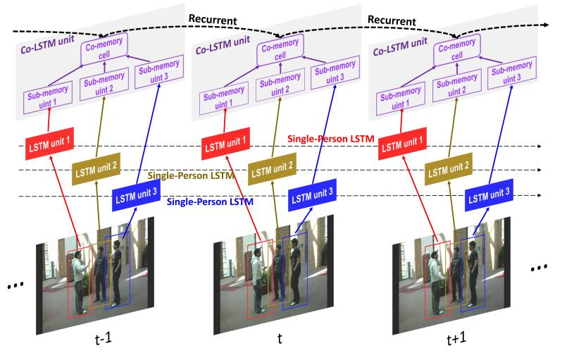
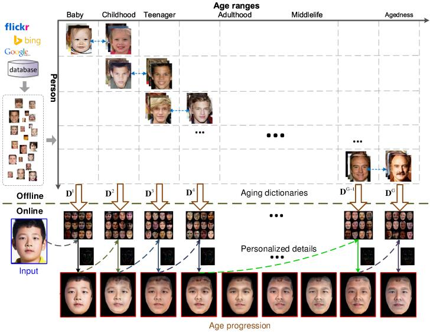
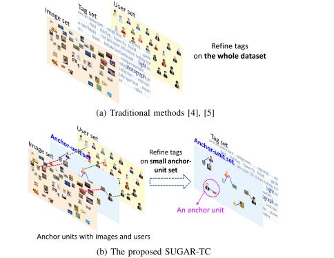
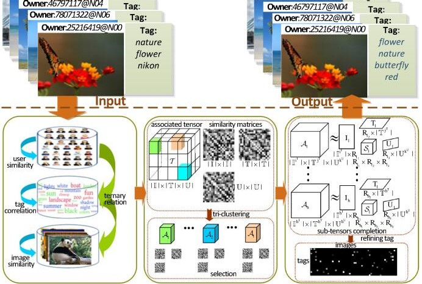
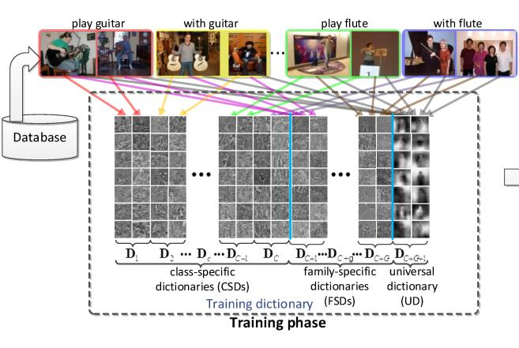
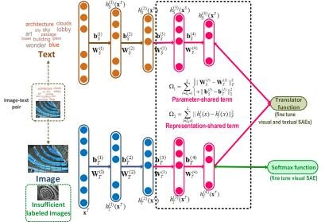
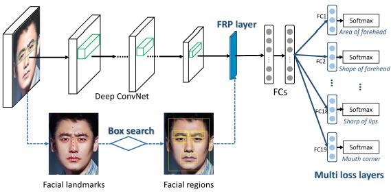
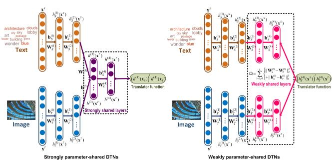
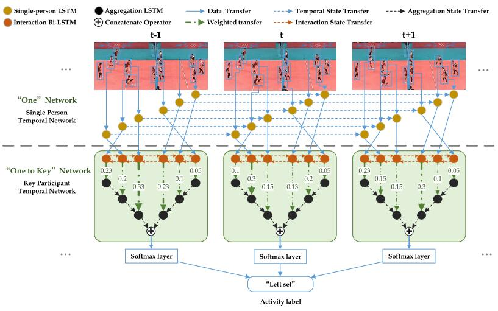

{kind=link}

Personalized Age Progression with Aging Dictionary
Xiangbo Shu, Jinhui Tang, Hanjiang Lai, Luoqi Liu, Shuicheng Yan
IEEE International Conference on Computer Vision (ICCV), 2015
|
|||||||||||||
| I am currently an Assistant Professor in Intelligent Media Analysis Group (IMAG), at School of Computer Science and Engineering, Nanjing University of Science and Technology, China. I received the Ph.D. degree from School of Computer Science and Engineering, Nanjing University of Science and Technology, China, under the supervisor Prof. Jinhui Tang, a leader professor of Intelligent Media Analysis Group (IMAG). From Aug. 2014 to Aug. 2015, I am also an visiting scholar supervised by Prof. Shuicheng Yan in Learning and Vision Research Group at the Department of Electrical and Computer Engineering, National University of Singapore. I am the member of the IEEE, the ACM, and the CCF. |
Research Interests
Computer Vision, Multimedia Computing, Deep Learning
Applications: Human Analysis, Face Analysis, Social Multimedia
Awards
2017 Excellent Doctoral Dissertation of Chinese Association for Artificial Intelligence (CAAI)
2017 Excellent Doctoral Dissertation of Jiangsu Province, China
2017 Excellent Doctoral Dissertation of Jiangsu Computer Society, China
2017 Excellent Doctoral Dissertation of Nanjing University of Science and Technology, China
2016 Best Student Paper in MMM 2016
2015 Best Paper Runner-up in ACM Multimedia 2015
2015 China National Scholarship
2015 ACM MM 2015 Travel Grant
Selected Publications
|  | Hierarchical Long Short-Term Concurrent Memory for Human Interaction Recognition Xiangbo Shu, Jinhui Tang, Guo-Jun Qi, Wei Liu, Jian Yang IEEE Transactions on Pattern Analysis and Machine Intelligence (Major Revision)
|
|  | Personalized Age Progression with Bi-level Aging Dictionary Learning Xiangbo Shu, Jinhui Tang, Zechao Li, Hanjiang Lai, Liyan Zhang, Shuicheng Yan IEEE Transactions on Pattern Analysis and Machine Intelligence, 2018
|
|  | Social Anchor-Unit Graph Regularized Tensor Completion for Large-Scale Image Retagging Jinhui Tang, Xiangbo Shu, Zechao Li, Qi Tian IEEE Transactions on Pattern Analysis and Machine Intelligence (Major Revision)
|
|  |
Tri-Clustered Tensor Completion for Social-Aware Image Tag Refinement Jinhui Tang, Xiangbo Shu, Guo-Jun Qi, Zechao Li, Meng Wang, Shuicheng Yan, Ramesh Jain IEEE Transactions on Pattern Analysis and Machine Intelligence, 2018
|
|  |
Image Classification with Tailored Fine-Grained Dictionaries Xiangbo Shu, Liyan Zhang, Jinhui Tang, Guo-Sen Xie, Shuicheng Yan IEEE Transactions on Circuits and Systems for Video Technology, 2018
|
|  |
Generalized Deep Transfer Networks for Knowledge Propagation in Heterogeneous Domains Jinhui Tang, Xiangbo Shu*, Zechao Li, Guo-Jun Qi, Jingdong Wang ACM Transactions on Multimedia Computing, Communications, and Applications, 2016
|
|  |
Computational Face Reader Xiangbo Shu, Jinhui Tang, Guo-Jun Qi, Zechao Li, Yu-Gang Jiang and Shuicheng Yan International Conference on MultiMedia Modeling (MMM), 2016 (Best Student Paper)
|
|  |
Weekly-Shared Deep Transfer Networks for Heterogeneous-Domain Knowledge Propagation Xiangbo Shu, Guo-Jun Qi, Jinhui Tang, Jingdong Wang ACM Multimedia, 2015 (Best Paper Runner-up)
|
|
Personalized Age Progression with Aging Dictionary Xiangbo Shu, Jinhui Tang, Hanjiang Lai, Luoqi Liu, Shuicheng Yan IEEE International Conference on Computer Vision (ICCV), 2015
|
|  |
Participation-Contributed Temporal Dynamic Model for Group Activity Recognition Rui Yan, Jinhui Tang, Xiangbo Shu, Zechao Li, Qi Tian ACM MultiMedia (MM), 2018 (Oral paper)
|
Teaching
Fall 2018: Multimedia Computing
Fall 2017: Multimedia Computing
Fall 2016: Multimedia Computing
Academic Services
KSII Transactions on Internet and Information Systems, since 2018
Neural Information Processing Systems (NIPS), 2018
International Conference on Computer Vision (ICCV), 2017
ACM International Conference on Multimedia (MM: long paper, short paper), 2016-2018
IEEE Transactions on Pattern Analysis and Machine Intelligence (TPAMI)
IEEE Transactions on Neural Networks and Learning Systems (TNNLS)
ACM Transactions on Knowledge Discovery from Data (TKDD)
IEEE Transactions on Knowledge and Data Engineering (TKDE)
IEEE Transactions on Multimedia (TMM)
IEEE Transactions on Circuits and Systems for Video Technology (TCSVT)
Pattern Recognition- Elsevier
Pattern Analysis and Applications - Springer
Neurocomputing - Elsevier
Multimedia Tools and Applications- Springer
Pattern Recognition Letters - Elsevier
Links
Jinhui Tang |
Guo-Jun Qi|
Shuicheng Yan|
Zechao Li |
Jingdong Wang |
Yu-Gang Jiang